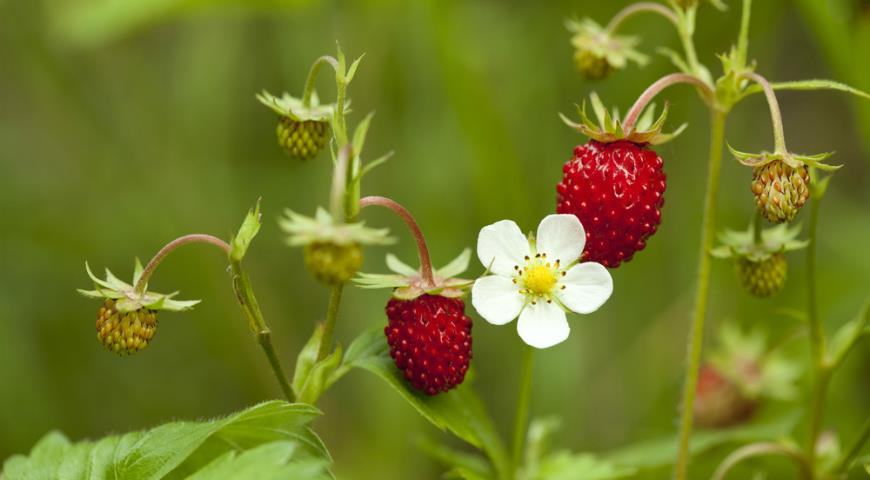

Виды ягод:
ЗЕМЛЯНИКА
Земляника — род многолетних травянистых растений семейства розовые. Этимологическое происхождение её русскоязычного названия, предположительно, может быть связано с тем, что плоды кустов земляники висят близко к земле, а в переводе с латыни её название — «fragaria» — означает «благоухающая».
И вообще. Земляника — настоящеее произведение искусства. Мало того, что она богата витамином С, а некоторые её сорта используются для ландшафтного дизайна, так она ещё и обладает интерсубъективно восхитительным вкусом. Добавление земляники уместно практически везде: и в домашних самодельных десертах, и в салатиках, и в йогуртах, и в супах, и в тортах, и в пирогах, и в пирожках, и в компотиках, и даже просто накидать несколько ягодок к каше — везде она будет либо восхитительным дополнением к основному вкусу блюда, либо нейтральным безвкусным (но полезным!) бонусом. Она идеальна!